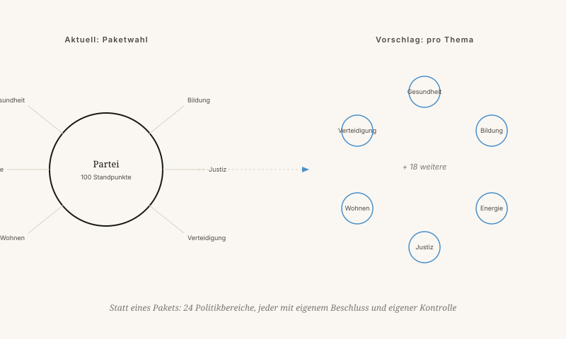

Eine Alternative: Nova Democratia, bei der je nach Thema von denjenigen entschieden wird, die dazu etwas Sinnvolles zu sagen haben.
Von Jacobus van Merksteijn · 12 Min. Lesezeit · 23. Mai 2026
Ein leerer Saal — wartend auf Entscheidungen je nach Thema
Parteien entstanden im neunzehnten Jahrhundert, um Interessen zu bündeln, als die Wähler noch keine Informationen beschaffen konnten. Heute hat jeder Wähler ein Telefon mit mehr Wissen als ein Minister im Jahr 1950.
Nova Democratia ist eine Regierungsform, bei der je nach Thema entschieden wird, von Menschen, die auf diesem Gebiet Kompetenz und Rückhalt nachgewiesen haben. Keine Parteien, dafür 24 Politikbereiche mit einem eigenen Kreislauf aus Vorschlägen, Prüfung und Beschluss.
Die drei Kernprinzipien: messbares Preis-Leistungs-Verhältnis, unabhängige Stichprobenkontrollen und Wohlstand als Hauptziel — wobei auch Respekt und Selbstwert zählen.

Im heutigen System stimmen Parteien für oder gegen auf Basis ihres allgemeinen Profils. Unter Nova Democratia wird die Frage in messbare Komponenten aufgeteilt.
Erst wenn all diese Zahlen vorliegen, entscheiden Bürger in diesem Politikbereich. Eine faire Abwägung auf messbarer Grundlage.
Die drei größten Risiken sind real und verdienen Aufmerksamkeit:
Im 7D-Modell ist eine Gesellschaft ein System mit mehreren Achsen gleichzeitig. G: Was auf Gemeindeebene funktioniert, kann auf nationaler Ebene scheitern. N: Vielfalt der Entscheidungen je Land ist ein Experimentierfeld, kein Luxus. Parteipolitik löscht diese Vielfalt aus. Nova Democratia stellt sie wieder her.
Nova Democratia schlägt vor, themenweise zu entscheiden — mit messbarem Preis-Leistungs-Verhältnis und ohne Paketabstimmungen.
Parteien entstanden im neunzehnten Jahrhundert, um Interessen zu bündeln. Heute hat jeder Wähler ein Mobiltelefon mit mehr Wissen als ein Minister des Jahres 1950. Dennoch stecken wir in drei strukturellen Mängeln fest: Paketabstimmungen (man erhält zehn Dinge, um die man nicht gebeten hat, um zwei zu bekommen, die man möchte), Loyalität über Inhalt (Politiker stimmen nicht nach ihrer Überzeugung, sondern nach Parteilinie) und der Vier-Jahres-Wahn (Politik am Horizont der nächsten Wahl, nicht der nächsten Generation).
Nova Democratia ist eine Regierungsform mit 24 Politikbereichen, jeder mit einem eigenen Kreislauf aus Vorschlägen, Prüfung und Entscheidung. Pro Thema entscheidet, wer auf diesem Gebiet Kompetenz und Rückhalt nachgewiesen hat. Die drei Kernprinzipien: messbares Preis-Leistungs-Verhältnis, unabhängige Stichprobenkontrollen und Wohlstand als oberstes Ziel — wobei auch Respekt und Würde zählen.
Ein konkretes Beispiel: Bei einem Tempolimit liegen zunächst vier messbare Fragen vor — Verkehrssicherheit (50 bis 70 weniger Tote pro Jahr), Reisezeit (12 Millionen Stunden mehr pro Jahr), CO₂ und wirtschaftliche Interessen. Erst wenn diese Zahlen vorliegen, entscheiden Bürger in diesem Politikbereich.
Drei Risiken sind real und verdienen Beachtung: Wer bewacht die Wächter? Wie bleibt das Ganze bei 24 getrennten Themen kohärent? Und wie verhindert man, dass am Ende nur Lobbyisten abstimmen? Im 7D-Denkrahmen stellt Nova Democratia den N-Wert wieder her: die Vielfalt der Entscheidungen, die Parteipolitik auslöscht.
Würden Sie lieber themenspezifisch abstimmen als auf eine Partei? Und welches Thema würden Sie als erstes entscheiden lassen?